Stay on the page.
FocusFloat is a focus timer that floats over your PDF, lecture or browser, with an app blocker, a Reels and Shorts stopper, flashcards and an honest report after every session. Everything you need to study, without leaving what you’re studying.
You open the PDF to study. Everything else opens too.
Every look at a timer app is a trip away from the page, and a chance to open something else.
Notifications and endless short-video feeds are built to keep you. Willpower alone loses.
A question comes up, you go to look it up, and the session is over.
Without data, every distracted session feels the same, and the next one goes the same way.

What happens in a session.

Every tool you need for a focused session.
Each tool has its own colour in the app. Tap one to see exactly how it works.
Floating timer
A countdown that stays on top of your work.
App Blocker
Distracting apps and their notifications stay closed.
ScrollStop
Hides Reels and Shorts. Keeps your chats.
Quick capture
Save a flashcard without leaving the page.
Breaks
One break per session that ends on time.
Flashcards & quizzes
Spaced repetition and a first-answer trainer.
Schedules
Blocking that starts on its own.
Session report
See exactly where focus slipped.
Goals & streaks
A daily goal, a streak and a week at a glance.
Account & sync
Your progress on phone and tablet.
Built around how studying really goes.
It lives on the page
The timer floats above any app. Tuck it into the screen edge, take notes from it, take a break from it. You rarely need to leave your work.
You decide before you’re tempted
Pick how hard quitting is before the session starts: a confirm, a 30-second wait, typing a sentence and solving sums, or fully locked.
It removes the feed, not the app
ScrollStop stops Reels and Shorts but leaves messages, posts and search working. A reel a friend sends you still plays once.
It tells you the truth
Sessions ended early never count toward your goal or streak. The report shows when you slipped and suggests when to take your break.
No AI, no ads
Everything runs on your phone. With an account, your progress and cards sync to your own private space, readable only by you.
Honest about its limits
Phone calls and Settings are never blocked. Android lets anyone force-stop an app, so FocusFloat makes quitting harder, not impossible.